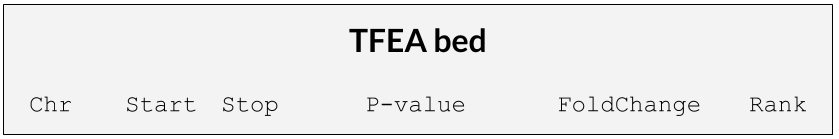
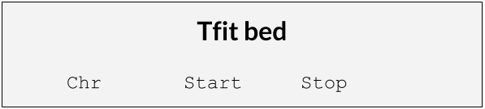

Install from GitHub¶
This module can be cloned from the GitHub repo to your local machine.
>>> git clone https://github.com/rutendos/base_content.git
Todo: Add to conda and PyPI
Requirements¶
Implementation is done in python 3 (Python 3.6.4)
This tool relies on bedtools (https://bedtools.readthedocs.io/en/latest/)
Python modules:
>>> pip install argparse
>>> pip install os
- pandas (https://pandas.pydata.org/)
>>> pip install pandas
- numpy (http://www.numpy.org/)
>>> pip install numpy
- matplotlib (https://matplotlib.org/)
>>> pip install matplotlib
Input Files¶
The python module takes in a .bed file (ranked_file.center.sorted.bed) from TFEA and plots the base content across positions.
{kind=link}
The module can also take in Tfit bed files in the format shown below.
{kind=link}
In addition to a a bed file of coordinates, the base_content requires a fasta file of the reference genome. The fasta file should be indexed and also should match the format of the bed file. (Make sure that the genome file has been indexed. If a fasta file is indexed it will have a .fai extension.)
- USCS format (chr1:start-stop)
- Ensembl/NCBI format (1:start-stop)
Running base_content¶
To run base_content in the commandline:
python base_content -r /path/to/reference/hg38.fa -b ./my_bedfile.bed -o /output/dir/ -d /path/to/intermediate_bed.bed -f /path/to/intermediate_fasta.fa -w 1500
Running on Fiji¶
Since Fiji is still running python 2 the recommendation is to run to a python 3 environment (https://bficores.colorado.edu/biofrontiers-it/cluster-computing/fiji/creating-and-managing-virtual-environments-with-python3):
>>> module load python/3.6.3
>>> python3 -m venv my_environment_name
>>> . my_environment_name/bin/activate
Once an environment has been set, one can install modules to their environment.
>>> pip install numpy
{kind=link}